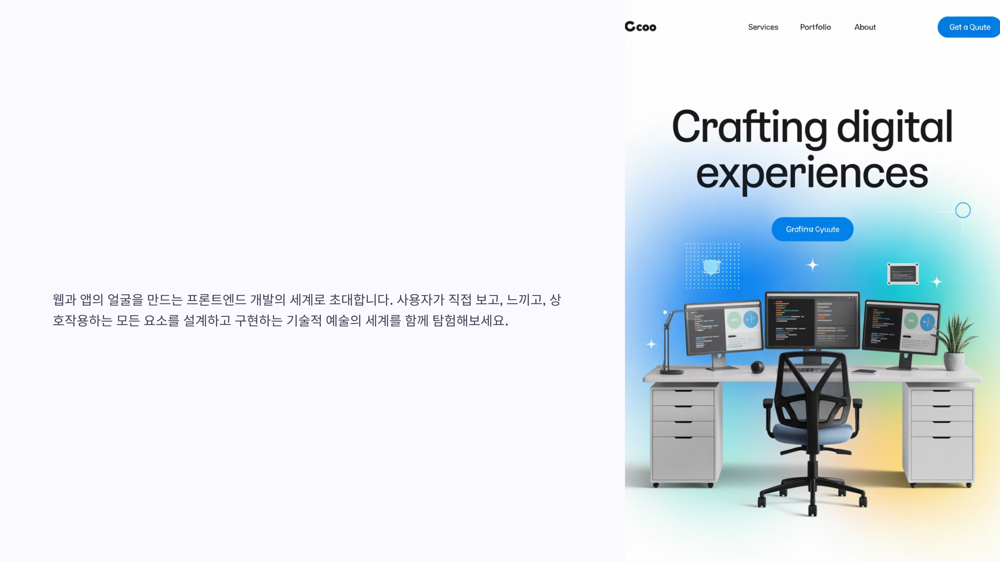
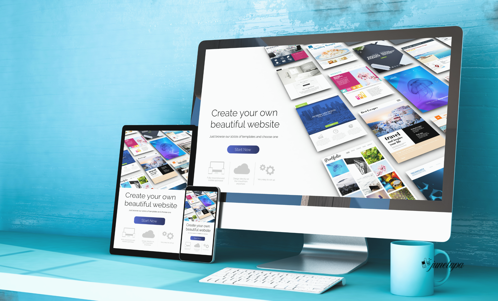
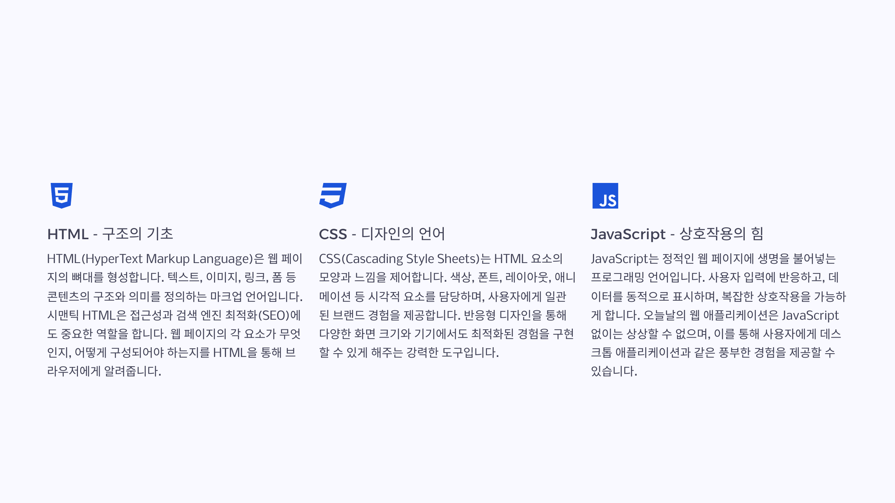
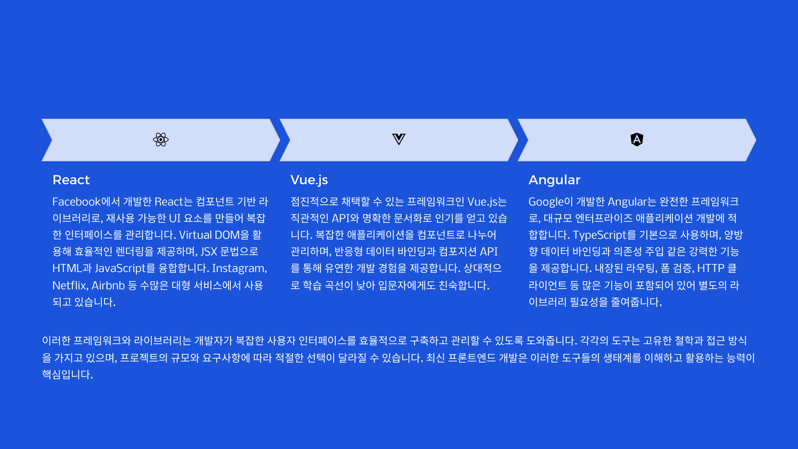
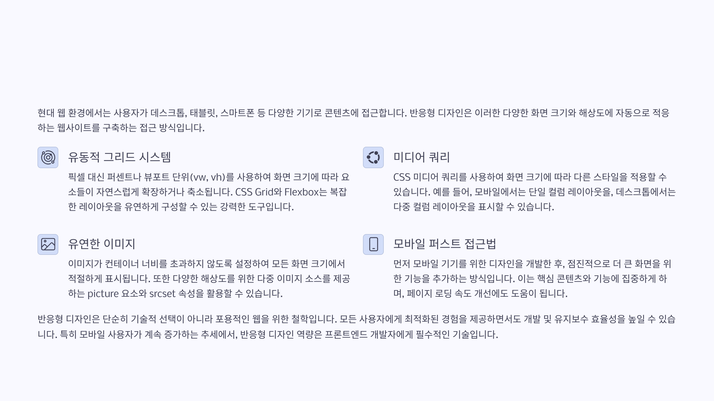
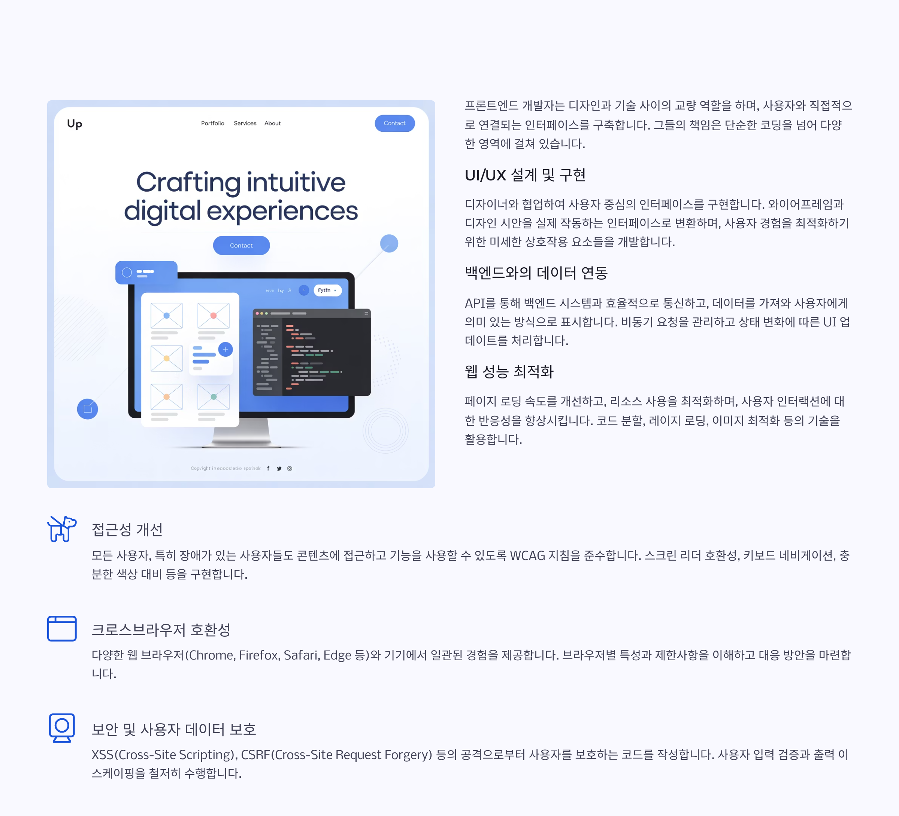
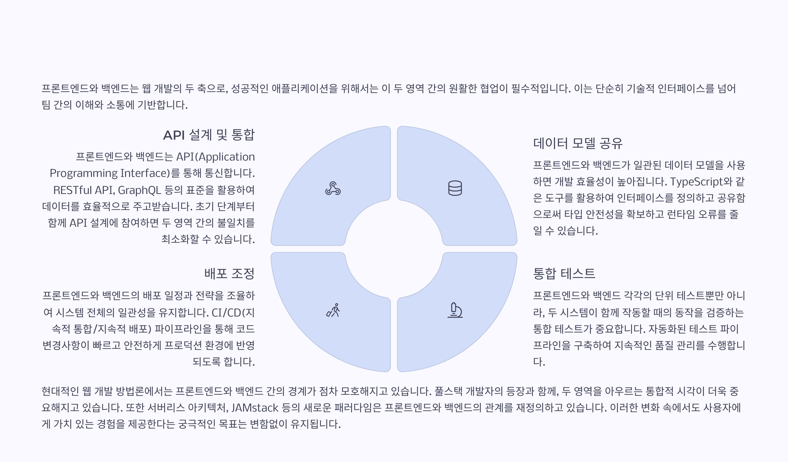
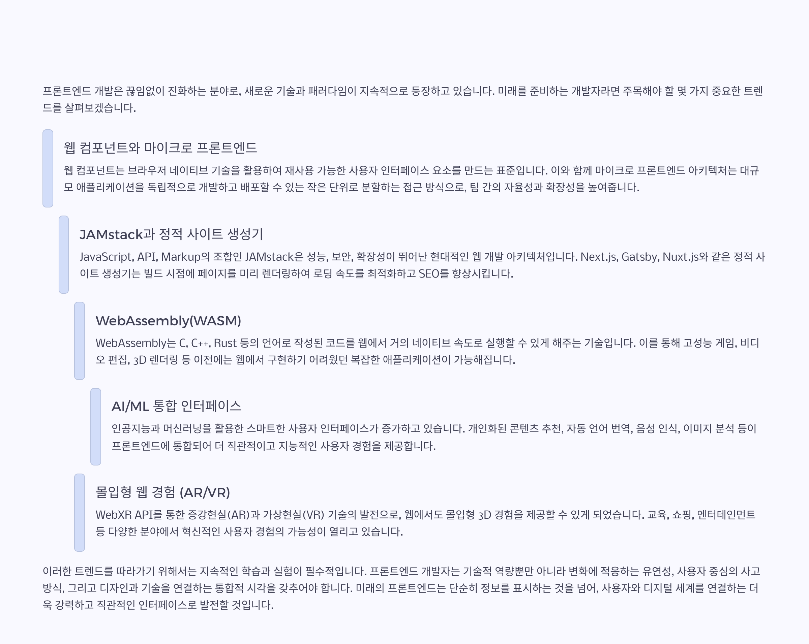

프론트엔드 개발의 모든 것 [사용자 경험을 혁신하는 기술]

프론트엔드 개발이란 무엇인가?

프론트엔드의 핵심 요소 : HTML, CSS, JavaScript

현대 프론트엔드 프레임워크와 라이브러리

반응형 디자인과 모바일 최적화

프론트엔드 개발자의 핵심 역할과 책임

프론트엔드와 백엔드의 협업 : 완전한 웹 서비스 구축

프론트엔드 개발의 미래 : 진화하는 기술과 트렌드
